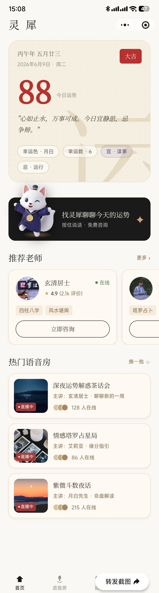
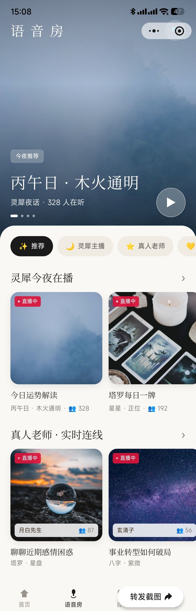
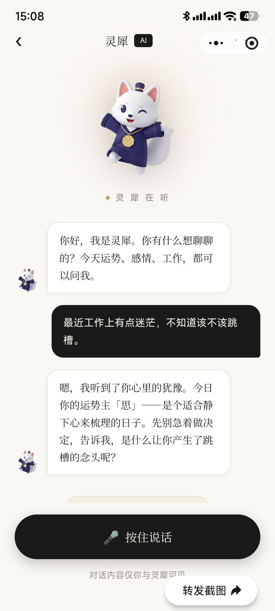

一款微信小程序：以「暖宣纸 · 东方雅韵」为视觉基调，把每日运势、AI 吉祥物对话与真人语音房融为一体，让玄学服务有温度、可陪伴。
灵犀面向年轻用户，用轻量、温暖的方式提供运势与命理服务。从打开即见的每日运势，到 AI 吉祥物随时倾听，再到真人老师驻场的语音房，形成「自助 → 陪伴 → 深度咨询」的完整链路。
农历 / 黄历信息、综合运势评分与宜忌标签，进入首页即可获取当日指引。
IP 形象「灵犀」全程陪伴，按住说话即可语音交流，私密且有温度。
主播驻场、麦位互动、实时弹幕与送礼，把命理解读做成可参与的直播现场。
真人老师列表与评价体系，AI 对话中可顺势派单，承接深度咨询需求。
暖宣纸底色、衬线书法字、朱红点缀与水印大字，统一而克制的国风美学。
微信小程序原生 WXML / WXSS / JS 开发，自绘组件与动效，无第三方 UI 框架。
以下为小程序真机运行截图，可在各画框内上下滚动查看完整页面。



↑ 截图为真机运行画面，画框内可上下滚动
打开首页，获取当日黄历、运势评分与宜忌指引。
与 AI 吉祥物语音对话，随时倾诉与答疑。
加入直播解读，上麦互动、围观送礼。
顺势派单到真人命理师，承接深度咨询。